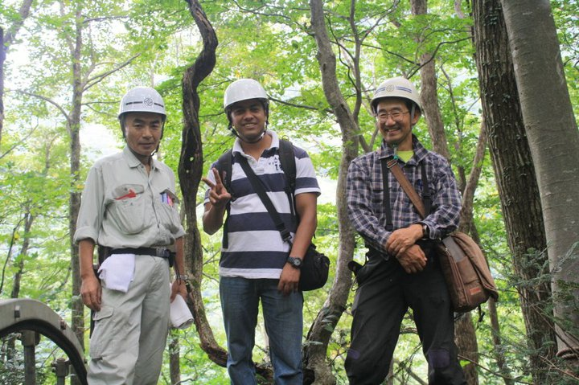
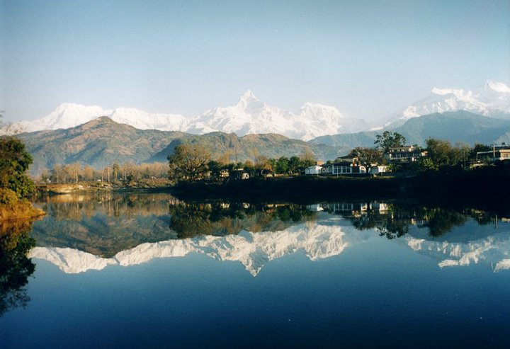

AMAR DEEP REGMI
2405-5 Massey Square, East York, Toronto, Ontario, M4C 5L6
437-771-6640 amardeep.regmi@gmail.com
ABOUT

Hello! I am Amar Deep Regmi, a highly competent and motivated geologist, with more than eight
years of experience in the field of geology. I have successfully completed graduate studies in
Geological Science and in Disaster and Emergency Management and is currently carryingout post
graduate studies in Geographic Information System, seeking an
opportunity where I can apply my problem solving and organizational skills to optimize the
utilization of
its resources and achieve maximum benefits as a progress to my career. I have published several
papers in national & international journals.Please visit my scholar
link here
PROFILE
- Capable of making educated and professional decisions in problems relating to geological and
environmental projects
- Proficient in analytical and problem solving including critical thinking across disciplines
in studying
and understanding disaster related problems
- Hardworking individual that able to adapt in either individual or team working environment
- Reliable for organizational and management skills on assigned tasks and responsibilities
- Dedicated with positive attitudes towards positive outcomes within reasonable time frame
QUALIFICATIONS AND SKILL
- Eight years of experience in geological, engineering geological and environmental projects,
- Able to work in any working environment,
- Managed to work in remote areas,
- Experienced field worker for geological, environmental and other related project,
- Able to work effectively in team environment gathering project information from multiple
sources (both fieldstaff and project office teams),
- Familiar with data manipulation, drawing preparation, quantity calculations, cost analysis
and bid document
preparation
- Excellent multi-tasking abilities; able to handle multiple projects thoroughly, analyze
specifications, materials
sales, customer dealing, relation building,
- Working knowledge in various software such as ArcGIS, HEC-RAS, Dips-Rocscience, SPSS,
AutoCAD,
Coreldraw, Microsoft Project, Microsoft Office etc.
- Authored and co-authored reports, journal and conference papers and made presentations in
national and
international conferences,
- Transferable Skills (leadership, decision making, time management, problem-solving,
analytical thinking,
mathematical skills, positive attitude)
- Demonstrated organizational/ planning skills and project management skills,
- Valid Ontario Driver License with own vehicle
EDUCATION
| Degree |
University/College |
Graduation year |
| GIS Application Analyst |
Fleming College |
2022 |
| Masters in Disaster and Emergency Management |
York University |
2021 |
| Postgraduate in Project Management |
George Brown College |
2018 |
| Masters of Science |
Geology |
2006 |
| Bachelor of Science |
Geology |
2004 |
WORK AND VOLUNTEER EXPERIENCE:
- Volunteer,Canadian Red Cross:September 2020 to Present
- Geotechnical technologist,Geopro Consulting Ltd, Richmond Hill, Ontario:January 2019-July 2019 (7 Months)
- Intern (Project Management),George Brown College, Toronto, Canada:May 2018-August 2018 (3 Months)
- Senior Geologist,Forum for Research and Development, Kathmandu, Nepal:March 2015-August 2017 (2 years and 5 months)
- Geologist,Nepal Academy of Science and Technology:April 2014-March 2015 (1 year)
- Geologist,Forum for Research and Development, Kathmandu, Nepal:April 2013-March 2014 (1 year)
- Geologist,Shah Consults Pvt. Ltd. Kathmandu, Nepal:April 2007-March 2010 (3 years and 6 months)
TRAINING AND SEMINAR:
- IMS 100 and IMS 200,
- Use of GIS and Remote Sensing in landslide hazard mapping and mineral exploration (KIGAM, 2011)
- Working at Height Training, Toronto District School Board (TDSB) , Toronto, Ontario
- Workplace Hazardous Materials Information System (WHMIS) , Toronto, Ontario
- Worker Health and Safety Awareness in 4 steps, Toronto, Ontario
- Emergency First Aid with CPR, Toronto, Ontario
Hobbies & Interests:
Please click on image to know more about my Hobbies
